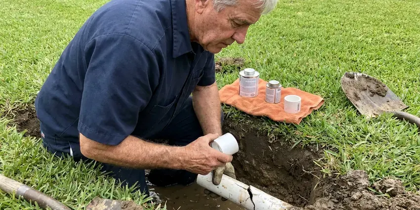

Plumbers Near Me in Kapaa, HI
For fast and professional plumbing services across Kapaa, HI, look no further than the skilled team at HKL Plumbing.
- Same-Day Plumbing Service
- Upfront Quotes
- Expert Hawaii Plumbers
- Prompt, Reliable Service

Licensed Plumbers On Call Today in Kapaa, HI.
Schedule your service with HKL Plumbing and get professional plumbing care tailored to your needs.
Expert Plumbers Near Me for Kapaa, HI Homeowners
As experienced plumbers near me in Kapaa, HI, HKL Plumbing understands the challenges of Hawaii plumbing systems, including issues related to local soil conditions and water quality. We're committed to providing long-term solutions that keep your home or business running smoothly.
Our expertise includes:
- Clear tough clogs from drains and sewer lines.
- Slab Leak Detection & Repair
- Diagnose and repair all types of leaks.

Additional Plumbing Maintenance Services in Kapaa, HI
Our maintenance and specialty plumbing services in Kapaa, HI catch small problems before they become emergencies.


Customers
Why Choose HKL Plumbing for Plumbers Near Me in Kapaa, HI?
Choosing the right plumber is crucial for protecting your home's infrastructure and comfort. We pride ourselves on clear communication and lasting repairs.
- Transparent Pricing, We provide clear, upfront quotes before any work begins, so you know exactly what to expect without hidden fees.
- On-Time Arrival, We give you a real arrival window and call ahead when we are en route.
- Licensed Pros, Every job is handled or overseen by a licensed Hawaii plumbing contractor.
Citywide Coverage
Our plumbers work in every neighborhood of Kapaa, from established areas with original copper and galvanized pipe to newer communities plumbed with PEX. Wherever you live, a stocked truck is often nearby.
Experienced Team
Our team of plumbers brings years of hands-on experience to every job, tackling everything from minor repairs to major installations with care. Each technician is thoroughly vetted and trained to handle the diverse plumbing systems found in Kapaa homes and businesses.
Safety-First Approach
HKL Plumbing closely follows all safety protocols and plumbing codes during every job in Kapaa, HI. Our commitment to proper procedures protects the long-term integrity and safety of your home's plumbing system.
Trusted Certified Kapaa Plumbing Services Professionals
At HKL Plumbing, we take pride in providing certified plumbing services throughout Kapaa, HI. Backed by leading industry credentials, our experienced plumbers combine technical skill with genuine customer care. Whether it is repair, installation, or maintenance, we follow strict safety and quality standards to deliver lasting results you can trust.
Call Us Now PHCC Plumbing Contractor Recognition
PHCC Plumbing Contractor Recognition Better Business Bureau (BBB) Accreditation
Better Business Bureau (BBB) Accreditation Angi Certified Pro
Angi Certified Pro ISO 9001 Quality Management Certification
ISO 9001 Quality Management CertificationFull-Service Local Plumbing Services in Kapaa, HI
Water Softener and Filtration Service in Kapaa
Some rural homes in Hawaii rely on rainwater catchment, which needs proper filtering and disinfection to keep tanks and fixtures in safe shape. Hard water leaves scale on fixtures, inside water heaters and in pipes. We install and service water softeners, reverse osmosis drinking water systems and whole-house filters. Proper installation includes a bypass valve, drain connection and correct salt settings. Treated water helps your plumbing and appliances last years longer.

Slab Leak Detection & Repair in Kapaa, HI
Some valleys and lowland areas have expansive clay that swells with heavy rain and can stress slabs, foundations, and buried pipes. Slab leaks are a costly issue that can damage foundations. Our team uses non-invasive acoustic and thermal imaging equipment to locate hidden leaks under your home's concrete slab. We then perform precise repairs, minimizing disruption and protecting your foundation from costly long-term damage in Kapaa, HI.
Commercial Plumbing Services in Kapaa, HI
Businesses in Kapaa, HI have demanding plumbing needs. HKL Plumbing offers a full range of commercial plumbing services, including grease trap cleaning, commercial water heater installation, backflow prevention, and large-scale drain maintenance. We understand the importance of limiting downtime for your business and provide efficient, reliable services tailored to commercial properties, so your operations run smoothly and comply with health and safety regulations.
Emergency Plumbing Repairs in Kapaa, HI
Burst pipes, overflowing toilets and gas smells cannot wait until Monday. Our emergency plumbers respond quickly, shut off water or gas and make the repair or a safe temporary fix. We carry common parts to finish most emergency jobs in one trip. After-hours pricing is quoted up front.
Toilet, Faucet and Fixture Repair in Kapaa, HI
Running toilets, dripping faucets and leaky shower valves waste water and drive up your bill. We replace flappers, fill valves, cartridges and wax rings, or install new fixtures when repairs no longer make sense. Mineral buildup from hard water often wears out cartridges faster, so we carry common replacements. We can also install water-efficient fixtures that meet current standards.
Water Heater Repair and Replacement in Kapaa
Some rural homes in Hawaii rely on rainwater catchment, which needs good filtration and disinfection to keep tanks and fixtures in safe shape. Hard water causes sediment to build up quickly in tank water heaters, shortening their life. We flush tanks, replace anode rods, thermocouples and elements and install new tank or tankless units. Our plumbers install brands such as Rheem, Bradford White, A. O. Smith, Navien and Rinnai. Every installation includes proper venting, expansion tank and code-required strapping.
Fixture Installation & Repair in Kapaa
From upgrading old fixtures to repairing broken ones, our plumbers provide professional installation and repair services for all your plumbing fixtures. This includes faucets, sinks, toilets, showers, bathtubs, and garbage disposals. We work with all major brands, making sure of proper installation and function. Whether you're remodeling a bathroom or simply need a leaky toilet fixed, we make sure your new or repaired fixtures work smoothly and efficiently in your Kapaa home.

Drain Cleaning and Sewer Service in Kapaa, HI
Clogged sinks, tubs and toilets are among the most common calls we take. We clear drains with cables and jetters sized to the pipe, then test for full flow. For repeat or whole-house backups, we inspect the main sewer line with a camera. We explain what caused the clog and how to prevent it.
Your Local Plumbers Near Me in Every Kapaa, HI Neighborhood
Our commitment to the Kapaa community means we provide prompt, reliable service with a focus on long-term solutions, not just quick fixes. We understand that local conditions, such as water hardness and soil movement, play a big role in plumbing health, and our work reflects that understanding.
Local plumbers also understand the permit process, inspection requirements and water conditions in your community. We keep the parts that local homes need most on our trucks. That helps us finish the job in one visit.
HKL Plumbing at a Glance
- Licensed and insured plumbers serving Kapaa, HI
- Same-day appointments and 24/7 emergency response
- Clear written estimates, no hidden fees
- 4.8-star rated by 529+ Hawaii customers
Kapaa Map
Kapaa Information
- Population
- 11,652
- Area codes
- Local
- Service area
- Kapaa and communities within 40 miles
- Nearby
- Waianae, Maili, Nanakuli, Schofield Barracks
Some rural homes in Hawaii rely on rainwater catchment, which needs good filtration and disinfection to keep tanks and fixtures in safe shape. For homes in Kapaa, HI, regular plumbing maintenance and timely repairs help fight mineral buildup, soil movement and moisture, all of which can affect pipe integrity and fixture life.
Expert Services
Trust our professionals for reliable HKL Plumbing solutions in Kapaa, HI.
Our Specialized Plumbing Services in Kapaa, HI
At HKL Plumbing, we provide a complete range of plumbing services across Kapaa, HI. From leak detection to full system installations, our team ensures fast, precise, and affordable service for both residential and commercial properties. Explore our core services below:


How Our Plumbers Near Me Service Works in Kapaa, HI
Our process is designed to make booking a plumber easy and keep you in the loop at every step.
Request a Quote
Call us at (808) 649-6718 or fill out our online form to schedule an appointment. We'll gather basic information about your plumbing issue and set up a suitable time for a technician to visit your Kapaa home.
On-Site Diagnosis
A licensed plumber will arrive at your home, conduct a thorough inspection, and accurately diagnose the problem. They will explain their findings clearly and discuss all available repair or replacement options.
Upfront Pricing
Before any work begins, you'll receive a clear, transparent quote outlining the cost of the service. We believe in no surprises, so you'll know the exact price for the plumbing work in Kapaa.
Frequently Asked Questions About Plumbers Near Me in Kapaa
Plumbing costs in Kapaa can vary widely depending on the type and complexity of the service. A basic service call or minor repair, like a faucet drip, might range from $150-$300. More involved jobs, such as water heater replacement or slab leak repair, can range from $800 to several thousand dollars. We provide upfront, transparent pricing after diagnosing the issue.
Yes. Our company holds the plumbing license required in Hawaii, and our plumbers are trained and supervised accordingly. Hawaii bases its plumbing rules on the Uniform Plumbing Code, and each county adds its own amendments and handles permits and inspections. We also carry liability insurance and workers compensation.
Backflow prevention devices are essential for preventing contaminated water from flowing back into your clean drinking water supply. They are often required by local plumbing codes for commercial properties and certain residential systems, such as irrigation systems. Our plumbers can install, test, and repair these devices so your water remains safe and compliant with health regulations.
Hard water contains high levels of dissolved minerals like calcium and magnesium. Soft water has these minerals removed. Some rural homes in Hawaii rely on rainwater catchment, which needs proper filtering and disinfection to keep tanks and fixtures in safe shape. Hard water can lead to mineral buildup in pipes and appliances, reduced soap lather, and dry skin. We can test your water in Kapaa and recommend treatment solutions.
Yes. Most calls placed in the morning can be handled the same day. Emergency service is available for urgent problems like burst pipes and sewage overflows.
Some valleys and lowland areas have clay-rich soil that swells with heavy rain and can stress slabs, foundations, and buried pipes. Some rural homes in Hawaii rely on rainwater catchment, which needs proper filtering and disinfection to keep tanks and fixtures in safe shape. Older homes in Kapaa may also have issues with aging galvanized pipes or tree root intrusion in sewer lines.
For many significant plumbing projects in Kapaa, such as water heater installation, main line repairs, or major repiping, a permit is required by local code. This ensures the work meets safety and quality standards. HKL Plumbing will handle all required permit applications and inspections for your project.
Yes. Our workmanship is covered by a written warranty, and parts carry the manufacturer warranty. Details are listed on your estimate and final invoice.
What People Are Saying About Our Plumbing Experts?

Laura S.
I scheduled a water heater replacement, and the team made the process smooth and affordable. The new unit works perfectly, and they cleaned up after completing the job.
Water Heater Replacement · Kapaa, HI
Daniel K.
A pipe burst at 11 pm and they actually answered. The plumber showed up within the hour, shut everything down, and had us back to normal the next morning. Could not ask for more.
Emergency Plumbing · Schofield Barracks, HI
Robert G.
The trenchless sewer replacement saved our front yard. They walked us through the camera inspection footage first so we knew exactly what we were paying for.
Sewer Line Replacement · Nanakuli, HISofia M.
Two new toilets installed in one visit, no mess left behind, and the tech even adjusted a faucet he noticed was dripping. Fair pricing and really friendly.
Toilet Installation · Nanakuli, HI
Emily R.
I called HKL Plumbing for plumbing repair, and the technician was fast, polite, and thorough. They explained the problem clearly and fixed it the same day. I will definitely hire them again. Highly recommended!
Plumbing Repair · Maili, HI
Patricia H.
We had a slab leak that two other companies could not find. HKL Plumbing located it in under an hour, explained our options, and the price matched the quote to the dollar.
Slab Leak Repair · Nanakuli, HI